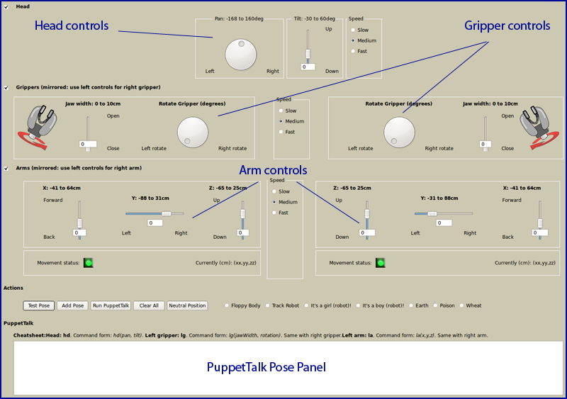

Design Gestures with PR-Puppet
PR-Puppet lets you use a robot simulator to design sequences of
poses. When you are happy with the poses, you can run them on the
pysical robot.
Here is what you can control in the interface:
- The head can both swivel, and nod. You can also control the
amount of time you want the head movement to take.
- The grippers can open or close, and they can rotate. Here too
you can control how much time you want that motion to take.
- The arms can move independently from each other. You can move
them up, down, and sideways.
You will work with the PR-Puppet window that has all the
dials and sliders, with the Gazebo robot simulator window,
and every once in a while with the Browser window. The screen
is small, so you might have to shuffle those around a bit.
How You Do It
You move each of the screen controls a little bit, and then hit
the Test button. You will see the simulated robot take on
the position to match all the gauges. Set gauges,
click Test, and do it again. There are a few pitfalls we
list further down. If you ever get stuck with red lights, you can
click on the button that says Neutral Position. That will
get the robot into a starting position that's always the same.
When you like a pose, you can hit the Test Pose
button. This click will place a line of PuppetTalk in the
text field toward the bottom. This line is how you record the pose for
later playback.
When you have collected a few lines, you can click on the Run
Puppet Talk button. That will run the simulated robot through
all your poses.
When you want to see the physical robot run through your poses, you
cut-and-paste your PuppetTalk lines into the browser window
that you will find buried somewhere under the PuppetTalk and
simulator windows.
The Clear All button resets all the gauges to match the
current simulated-robot pose. After clicking the button, you'll be
asked whether you also want to clear the PuppetTalk text
field.

Challenges
You can't always get what you want:The arms cannot always move
in the direction you want. The mechanical joints won't let them. So
sometimes you have to move an arm down a little, or to the side. When
an arm pose you dialed in is impossible to reach, the red light under
that arm will light up red. It will be yellow while the arm is
moving. Hint: the most extreme arm slider setting is often the
culprit.
Look at the robot joints, and try to understand why some arm movement
might not work. Sometimes, though, the robot just isn't smart enough
to figure it out. That's why they haven't taken over the world yet.
How Does PuppetTalk Work? Once you have added a few
lines to the pose window, you can see whether you understand what each
line is trying to say. Once you figure it out, you can edit this
window, cutting and pasting sections to make poses repeat.
You also cut/paste your PuppetTalk into a regular text
editor, and then paste it back into the pose panel. You should find a
little text editor window buried somewhere among the other three
windows.
Hint: If you can't find a window, move the cursor to the left edge of
the screen, and find the icon that corresponds to what you are looking
for. Then click that to bring the window to the front.
The Simulator Window: You can move the simulated robot around
in its Gazebo window. Use three controls for this: left-mouse
drag, right-mouse drag, and middle-button scroll. You'll figure out
what they do. You can resize the Gazebo window to take a
closer look.